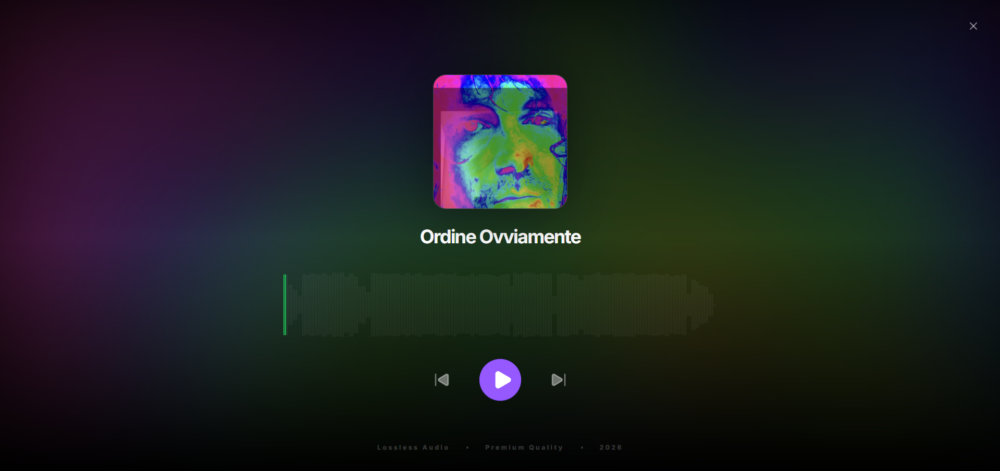
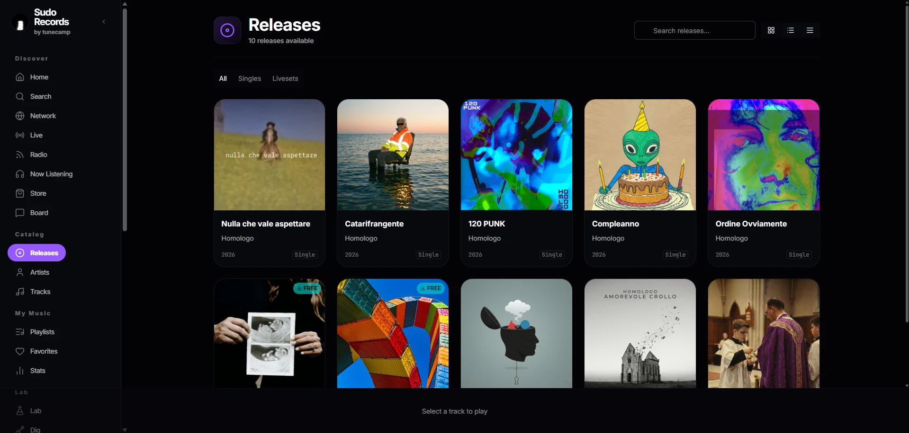
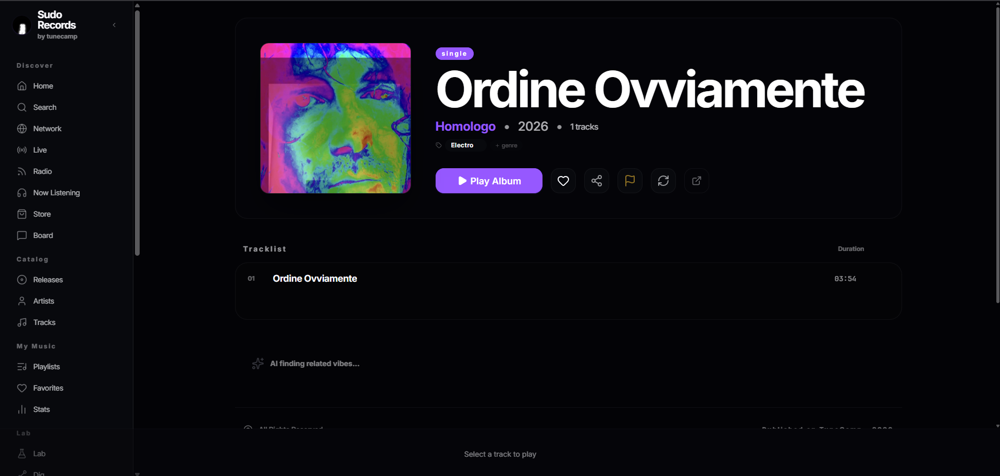
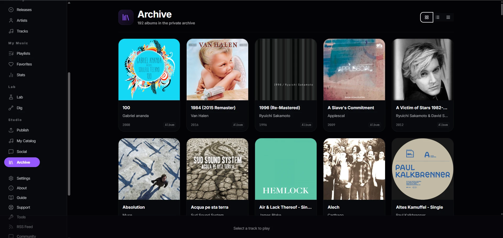

The open-source, AI-powered streaming server for independent artists. Self-host your library, monetize your work, and federate with the world.
Product Preview
From catalog management to a full-screen ambient player — everything runs on hardware you control.




Tunecamp combines personal streaming with social federation, giving you full control over your catalog and your community.
Connect with Mastodon and the Fediverse. Fans can follow your artist profile directly from their favorite social app.
Stream your music on the go. Compatible with DSub, Symfonium, Amuse, and dozens of other mobile clients.
Built on open standards — ActivityPub and HTTP federation. Instances discover each other and share their catalogs across the network.
Auto-generated waveforms for every track.
Free, pay-what-you-want, or unlock codes.
Auto album ID and metadata enrichment.
Stripe — sell direct, no middlemen.
Premium responsive dashboard for you and fans.
Tunecamp works with your existing file structure. No complex databases required to start.
Drop your audio files into folders by Artist and Album.
Run the Tunecamp server and point it to your music directory.
Your site is live with streaming, downloads, and Fediverse connectivity.
Standalone tools that extend Tunecamp. Each lives in its own repo and can be used independently.
github.com/scobru/tunecamp-peer
Lightweight CLI daemon that shares your local music folders with any Tunecamp instance over a reverse WebSocket tunnel — no port-forwarding, no static IP. Disconnect and all index rows vanish instantly.
github.com/scobru/tunecamp-4-track-recorder
A browser-based 4-track cassette recorder built with the Web Audio API and Svelte 5. Low-latency overdub recording, latency compensation, sample-accurate playback — all client-side, no server needed.
View on GitHubgithub.com/scobru/tunecamp-audiofabric
Interactive 3D WebGL music visualization built with regl and the Web Audio API. Renders beautiful real-time audio-reactive 3D terrain and dynamic waveforms.
View on GitHubDiscover other artists using Tunecamp and register your own instance.